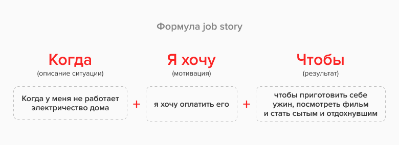
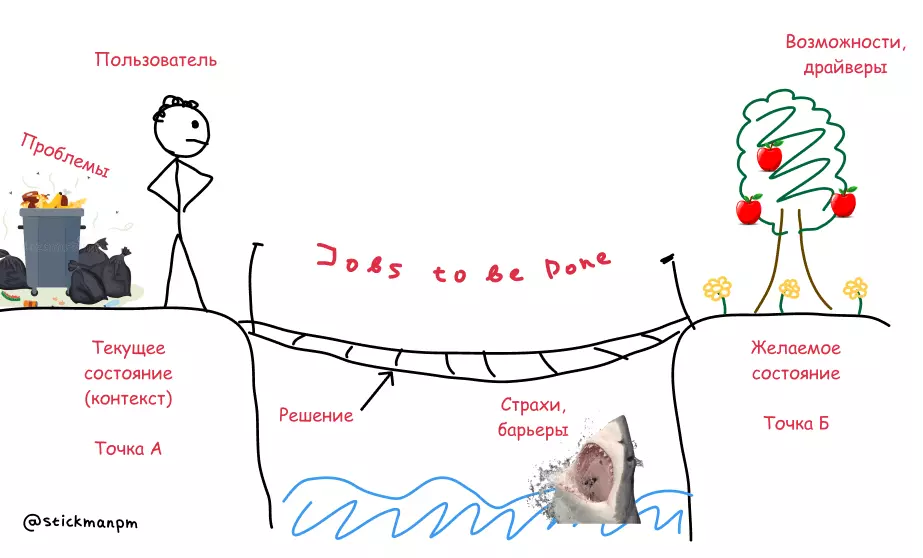
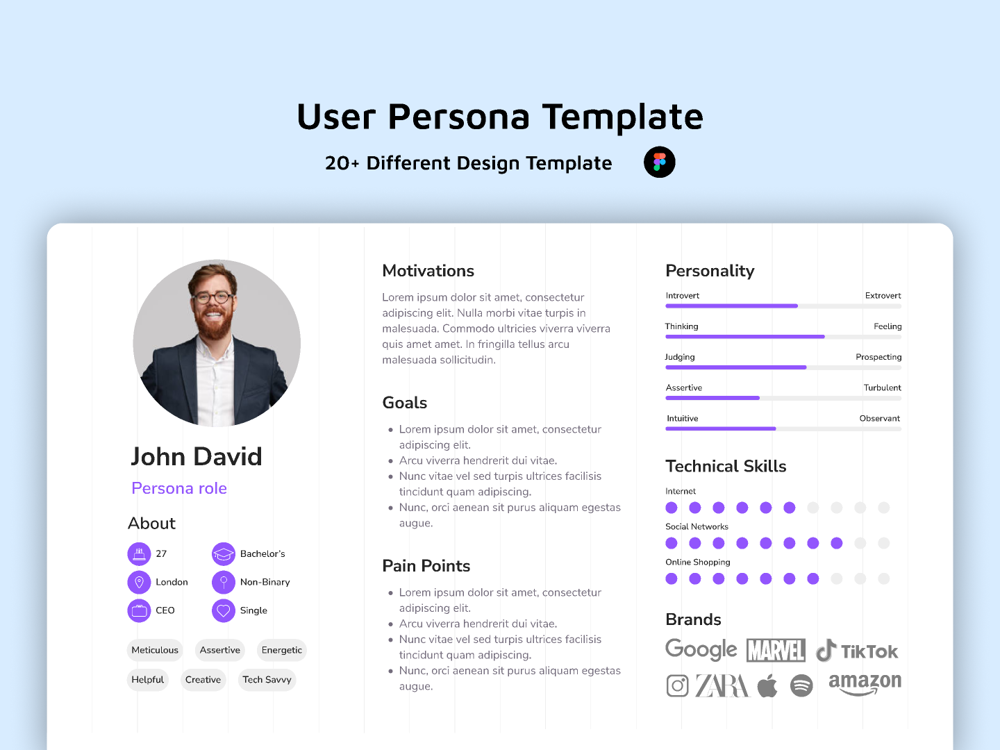
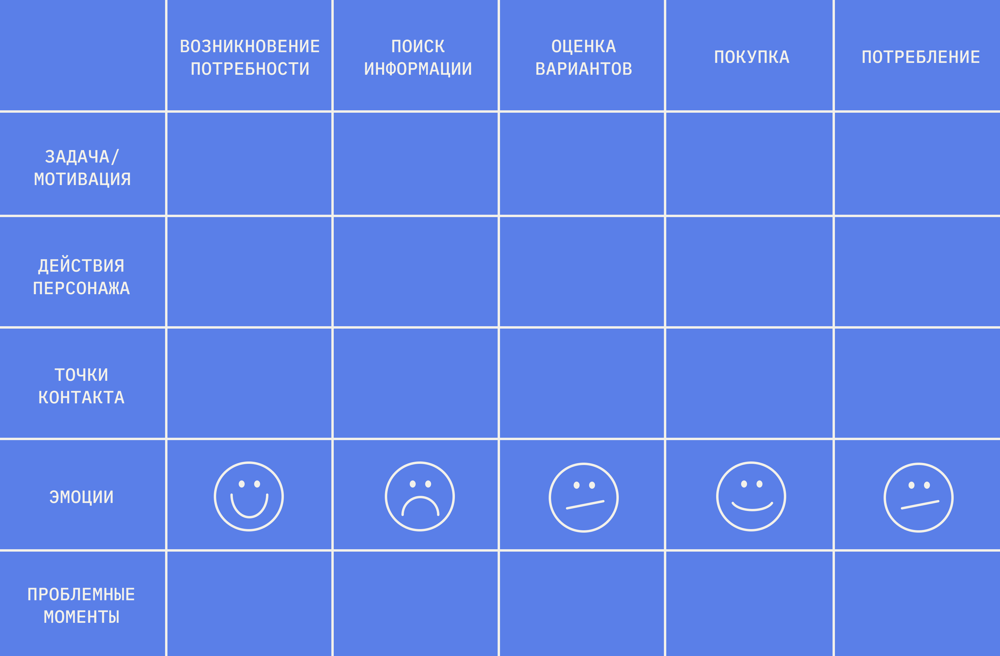

Можно сделать красивый, логичный, идеально сверстанный интерфейс — и пользователи всё равно не будут им пользоваться, потому что он решает не ту проблему. Сегодняшний урок — о том, как понять, что на самом деле нужно пользователю, до того как что-то рисовать.
План урока
- Пользователь не всегда знает, чего хочет
- Jobs to be Done — люди «нанимают» продукт для работы
- Персоны — зачем и как не превратить их в фикцию
- Customer Journey Map — путь пользователя целиком
- Простые способы узнать пользователя без бюджета
- Данные vs мнения — на что реально опираться
- Итог + домашнее задание
1. Пользователь не всегда знает, чего хочет
Классическая цитата, приписываемая Генри Форду: «Если бы я спросил людей, чего они хотят, они бы попросили более быструю лошадь». Пользователи хорошо формулируют свою боль («долго ждать», «неудобно искать»), но плохо формулируют решение — предлагать решения не их работа, а ваша. Задача исследования — не спросить «что вам сделать», а понять контекст и мотивацию, из которых решение выведете уже вы.
📎 Источник: NN/g — Customers Don't Know What They Want
2. Jobs to be Done — люди «нанимают» продукт для работы
Jobs to be Done (JTBD) — фреймворк, который переворачивает вопрос: не «кто наш пользователь», а «какую работу пользователь пытается выполнить, и почему он нанимает для этого именно наш продукт».
В целом, всегда можно и нужно по ходу задачи задавать себе эти три вопроса (из этого получится Job Story):

Классический пример из книги Клейтона Кристенсена — люди «нанимают» молочный коктейль в McDonald's не как десерт, а как удобный завтрак-компаньон в долгой скучной дороге на работу: он густой (долго пьётся), не пачкает руки, помещается в подстаканник.
Для UX-редактора JTBD особенно полезен при написании микротекстов: текст кнопки и подсказки должен отвечать на «работу», которую человек делает прямо сейчас, а не на абстрактную функцию продукта.

📎 Источник: Про JTBD подробно и понятно от Битрикс24 · Clayton Christensen Institute — Jobs to Be Done
Советуем пройти бесплатный курс по JTBD от Tilda Education
3. Персоны — зачем и как не превратить их в фикцию
Персона — собирательный образ типичного пользователя, основанный на реальных данных (интервью, аналитика), а не на фантазии команды. Персона нужна, чтобы у команды был общий язык при обсуждении решений («а как отреагирует Марина, наша занятая мама 35 лет» — вместо расплывчатого «а вдруг пользователю не понравится»).
Частая ошибка — делать «декоративные» персоны: красивая карточка с придуманным именем и стоковым фото, но без единого реального интервью за спиной. Такая персона не помогает принимать решения, а только создаёт иллюзию исследования. Персона обязана опираться на данные — пусть даже на 5 коротких интервью, а не на 0.
Кстати, для оформления персон есть файлик с шаблонами:

Еще вариант для создания юзер-персоны — вайтборд: FigJam (о нем в блоке с платной фигмой) или Miro.
📎 Источник: NN/g — Personas · Метод персон: как создать портрет пользователя
4. Customer Journey Map — путь пользователя целиком

Customer Journey Map (CJM) — визуализация всего пути пользователя от первого контакта с продуктом до достижения цели (и часто дальше — до повторного использования). Обычно строится по строкам: этапы, действия пользователя на каждом этапе, его мысли, эмоции (часто в виде графика настроения — вверх/вниз), точки боли и возможности для улучшения.
Ценность CJM для интерфейса конкретного экрана — в контексте: экран, который вы проектируете, это только один момент в длинном пути, и то, что происходило до него (например, пользователь пришёл в панике после ошибки оплаты), сильно меняет требования к тону текста и структуре именно этого экрана.
Шаблончики для CJM — тык
📎 Источник: NN/g — Journey Mapping 101 · Яндексовая статья про CJM · Подробная статься от Битрикс24
5. Простые способы узнать пользователя без бюджета
Полноценное исследование с рекрутингом респондентов — роскошь, доступная не всегда. Рабочие альтернативы:
- 5 коротких интервью с реальными пользователями (даже по 15 минут) дают значительно больше, чем 0 интервью — золотое правило исследований: 5 пользователей находят порядка 85% проблем юзабилити (Nielsen, «Why You Only Need to Test with 5 Users»).
- Анализ обращений в поддержку — реальные формулировки боли пользователей уже лежат в тикетах, если продукт уже существует.
- Отзывы в сторах и соцсетях — бесплатный источник неотфильтрованных мнений, хоть и не всегда репрезентативный.
- Наблюдение — попросить коллегу или знакомого (не из команды) пройти сценарий, просто молча наблюдая, где он замешкался.
📎 Источник: NN/g — Why You Only Need to Test with 5 Users
6. Данные vs мнения — на что реально опираться
В команде почти всегда будет фраза «мне кажется, лучше сделать вот так». Мнение — это нормальная отправная точка для гипотезы, но не основание для финального решения. Иерархия надёжности (от слабого к сильному): личное мнение → мнение эксперта/опыт → отзывы и качественные интервью → количественные данные (аналитика, A/B-тесты). Чем выше по этой цепочке — тем меньше субъективности, но и тем дороже получить данные. Задача не всегда «добраться до самого верха», а осознанно понимать, на каком уровне надёжности вы сейчас принимаете решение.
Итог урока
Сегодня разобрали JTBD, персоны, CJM и простые способы понять пользователя без большого исследовательского бюджета. Это база для следующего, финального урока модуля — как проверить готовое решение на реальных пользователях и что делать с результатами такой проверки.
Домашнее задание:
- Сформулировать JTBD для своего учебного продукта по формуле «Когда..., я хочу..., чтобы...».
- Провести 1 короткое (10–15 минут) интервью с любым человеком не из своей профессии на тему привычного вам сценария (например, как он ищет товар в интернет-магазине) и выписать 3 инсайта.
- Набросать упрощённую CJM из 4–5 этапов для своего продукта.